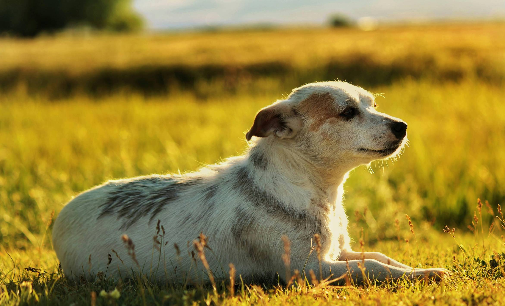
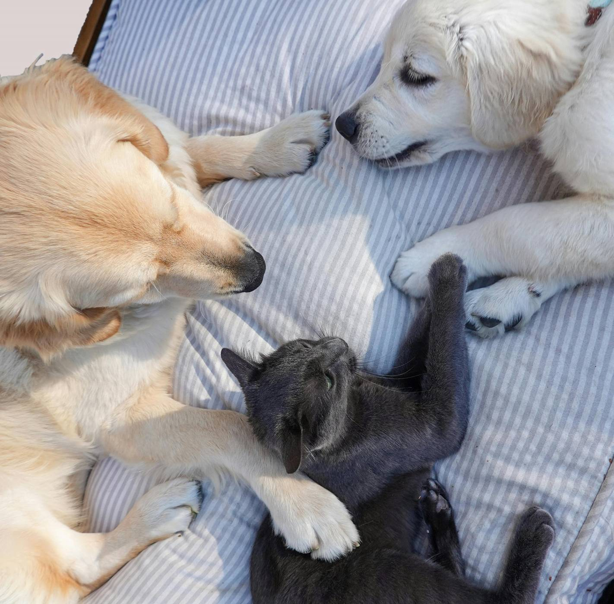

At Pawsitive Futures, we believe a safe, loving home can change everything. We give animals the care and time they need to heal, then help families find the connection that feels just right.
Learn about our work →Ottawa animal rescue
Big-hearted second chances.
We rescue, care for, and match animals with the people who will love them for life.
Every adoption changes two lives.Yours and theirs.

Since2014
A kinder future, together
Because every pet deserves to feel at home.

How you can help
A little love goes a very long way.
Whether you adopt, foster, volunteer, or make a donation, you create space for another animal to start again.
Ready when you are